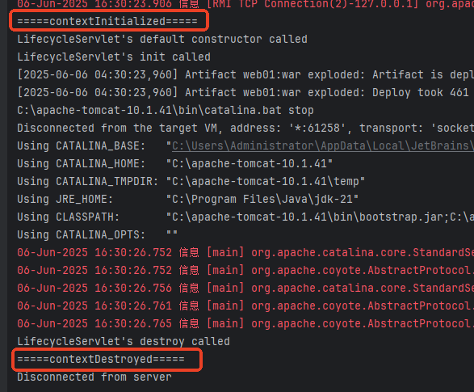

Servlet 监听器是 Servlet 规范中的一部分，主要用于监听 Web 应用中的特定事件，当这些事件发生时执行预定义的操作。监听器提供了一种事件驱动的编程模型，允许开发者在应用生命周期的关键点插入自定义逻辑。
Servlet 规范定义了以下几种监听器接口：
ServletContextListener：监听 Web 应用的启动和关闭ServletContextAttributeListener：监听应用范围内属性的添加、移除和替换HttpSessionListener：监听会话的创建和销毁HttpSessionAttributeListener：监听会话范围内属性的添加、移除和替换HttpSessionActivationListener：监听会话的激活和钝化(集群环境)HttpSessionBindingListener：监听对象绑定到会话或从会话解绑ServletRequestListener：监听请求的初始化和销毁ServletRequestAttributeListener：监听请求范围内属性的添加、移除和替换监听器可以通过以下两种方式配置：
@WebListener 注解@WebListener
public class MyListener implements ServletContextListener {...}
<listener>
<listener-class>com.example.MyListener</listener-class>
</listener>
该监听器中提供了两个方法：
编写类实现 ServletContextListener接口：
package com.jkweilai.listener;
import jakarta.servlet.ServletContextEvent;
import jakarta.servlet.ServletContextListener;
import jakarta.servlet.annotation.WebListener;
@WebListener
public class MyServletContextListener implements ServletContextListener {
@Override
public void contextInitialized(ServletContextEvent sce) {
System.out.println("=====contextInitialized=====");
}
@Override
public void contextDestroyed(ServletContextEvent sce) {
System.out.println("=====contextDestroyed=====");
}
}
web.xml 文件中配置监听器，或者使用 @WebListener注解 标注 。这里选择使用注解，更加方便一些。
启动和关闭服务器，观察控制台输出结果：
